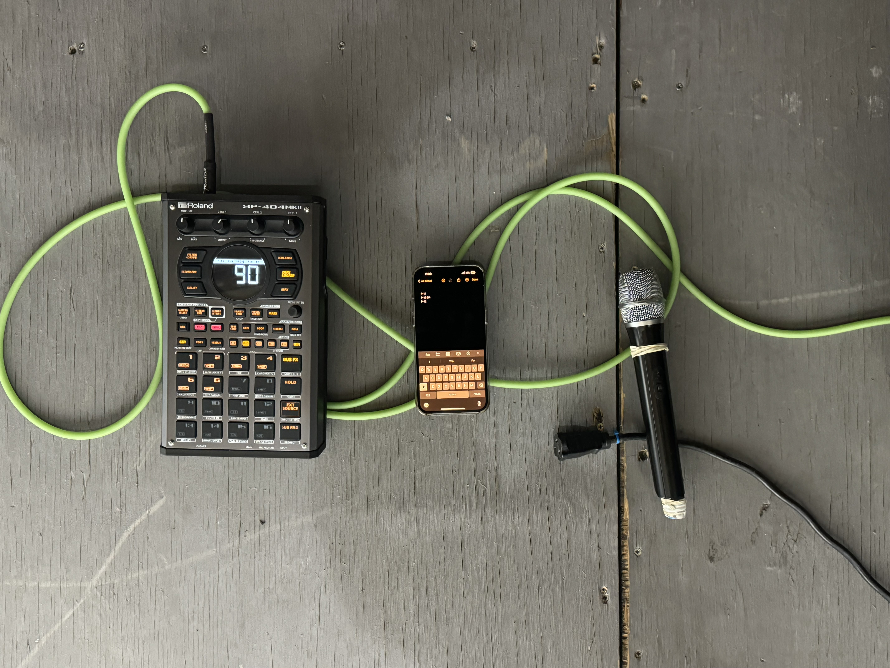
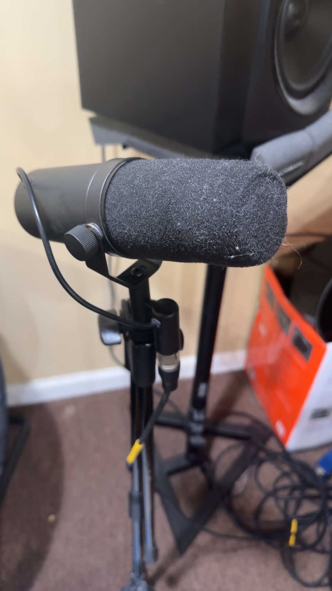

The Heart of Hip-Hop
We help write, record, and finalize Hip-Hop music. From album sequencing to mixing and mastering.
Artists Worked With
- Kendrick Lamar
- Danny Brown
- Future
Hip-Hop's Core Elements
Production
Rapping
Fashion
Beat Making
Dancing
Gear available for use:

MPC Drum Machine: Similar to that used on J.Dilla's "Donuts" album.

SM7B Microphone, the same microphone type used by Michael Jackson for "Thriller" album. Click the photo to learn more about it!
Other services
- Instrument tuning
- Mic feedback management
- Instrument cleaning
- Soundproofing consultation
- Session musician arrangement